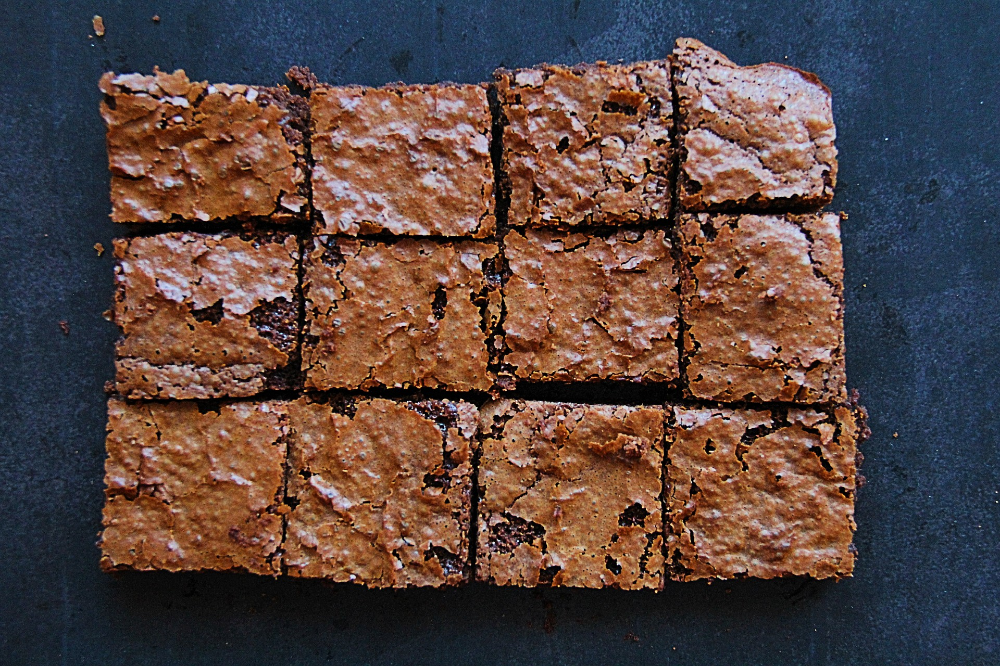

Toro Brownies

Description
Feeling a bit peckish after dinner? Whip up a brownie in no time using Toro brownies mixture.
You can't tell the difference between these and homemade brownies, or actually you can! These are better!
Ingredients
- Toro brownies mixture
- 1 Egg
- 1dl Water
- 100g Butter
Steps
- Preheat the oven to 210 degrees celsius
- Melt the butter.
- Pour the mixture into a bowl, add the egg, water and the butter
- Blend until nice and smooth. Pour onto a baking tray covered baking paper.
- Cook in the oven for 15 minutes.
- Enjoy the whole brownies in one sitting!